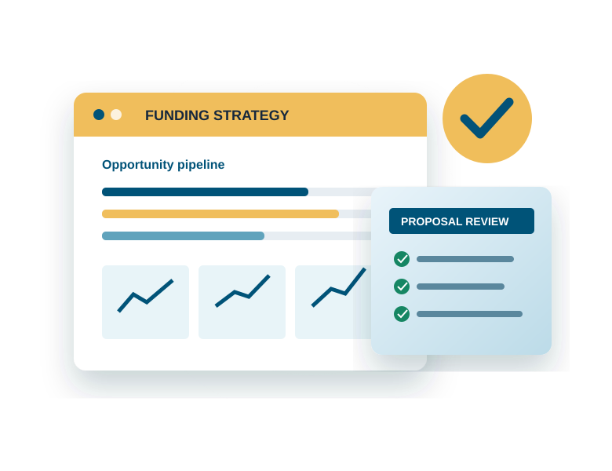

Grant Writing & Funding Strategy
Grant research, funding strategy, federal and foundation applications, program narratives, logic models, budgets, and complete proposal development.
Learn moreHelping U.S. nonprofits, businesses, and government contractors identify opportunities, develop competitive proposals, and build stronger funding pipelines.
Hope Impact Consulting Limited provides strategic grant, proposal, nonprofit, and government contracting support to organizations across the United States.

Securing funding or winning a contract requires more than good writing.
It requires identifying the right opportunity, understanding requirements, developing a competitive strategy, building a compliant response, coordinating supporting documentation, and delivering a submission that gives evaluators what they need.
That is where Hope Impact comes in.
We combine research, strategy, technical writing, proposal management, and compliance support to help organizations pursue grants, contracts, and institutional opportunities with greater confidence.
Six integrated service areas covering the full funding and contracting lifecycle.
Grant research, funding strategy, federal and foundation applications, program narratives, logic models, budgets, and complete proposal development.
Learn moreProfessional support for federal, state, and local RFPs, RFQs, RFIs, Sources Sought, technical proposals, and compliance requirements.
Learn moreIdentify, qualify, track, and strategically pursue contracting and funding opportunities before the solicitation deadline arrives.
Learn moreSupport with nonprofit formation, governance documents, IRS Form 1023/1023-EZ preparation, and grant-readiness planning.
Learn moreDevelop realistic, compliant proposal budgets, budget justifications, cost narratives, and financial documentation.
Learn moreCompetitive proposal support for private-sector, healthcare, education, institutional, and commercial procurement opportunities.
Learn moreOne structured process. One coordinated response.
Identify and evaluate relevant opportunities.
Assess requirements, competition, positioning, and approach.
Build compliant, persuasive narratives, budgets, and supporting materials.
Conduct quality, compliance, consistency, and evaluator-focused reviews.
Finalize the submission package and ensure submission readiness.
✓ Hope Impact isn’t simply a writing service — we manage the pursuit process from first look to final submission.
Winning often begins long before a solicitation is released.
Hope Impact helps businesses develop structured opportunity pipelines, qualify pursuits, conduct pre-RFP research, understand procurement environments, identify potential partners, and prepare capture strategies before proposal development begins.
We first understand the opportunity, organization, requirements, and evaluation criteria before developing the response.
Strong writing means little if a submission does not satisfy the solicitation. Compliance is built into our process.
Our recommendations and proposals are grounded in opportunity research, funder priorities, evidence, and client capabilities.
From opportunity identification and capture through proposal development, budgeting, review, and submission readiness.
Whether you’ve identified an RFP, need help finding grants, want to establish a nonprofit, or need to strengthen your contracting pipeline, we’re ready to help.
Let’s Discuss Your Opportunity →